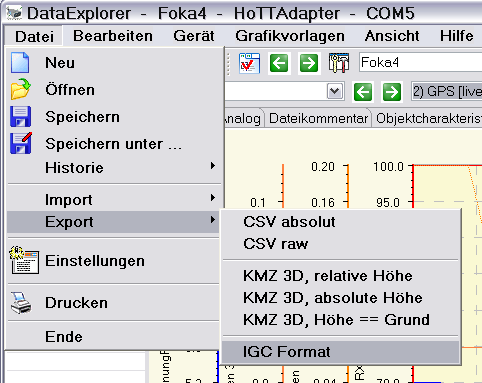
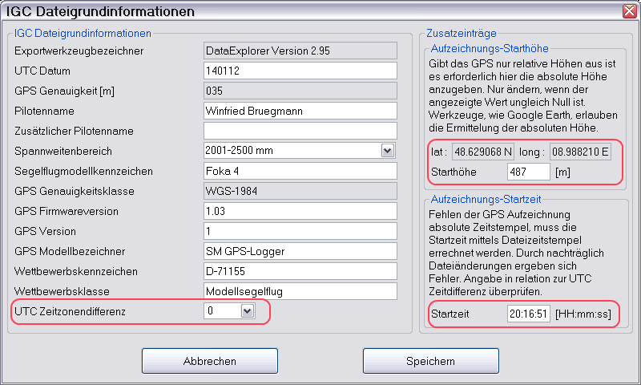
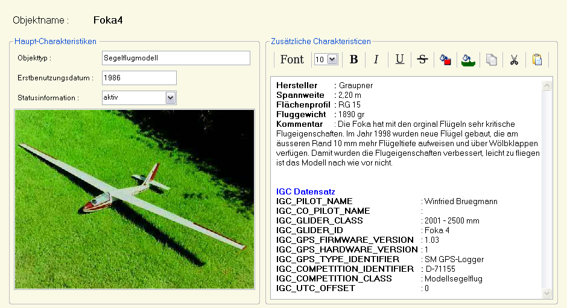

Wenn der gerade angezeigte Datensatz GPS (Global Positioning System) Daten enthält, ist es möglich daraus eine International Gliding Commission (IGC) Datei zu exportieren. So eine Datei ist Voraussetzung zur Teilnahme an dem On-Line-Contest OLC-Streckenfliegen für Flugmodelle. Der Globusknopf in der Toolbar verändert sein Aussehen und signalisiert damit, ob diese Funktion möglich ist. Sehen kann man es aber auch beim Öffnen des Datei Exportmenüs.

Selektiert man das IGC Format Menü öffnet sich ein IGC Format Export Dialog der die Grundinformationen, die im Dateikopf abgelegt werden abfragt.

Der Dialog kann Daten aus der Objektbeschreibung übernehmen und sollte möglichst vollständig ausgefüllt werden. Starthöhe und Startzeit sind in jedem Fall zu überprüfen.
Der IGC Datensatz aus der ObjektcharakteristikIGC_PILOT_NAME : Piloten Name IGC_CO_PILOT_NAME : Zweitpiloten Name, falls vorhanden IGC_GLIDER_CLASS : Spannweitenbereich IGC_GLIDER_ID : Flugmodell-Name oder -Bezeichnung IGC_GPS_FIRMWARE_VERSION : 1.03 IGC_GPS_HARDWARE_VERSION : 1 IGC_GPS_TYPE_IDENTIFIER : SM GPS-Logger IGC_COMPETITION_IDENTIFIER : D-4711 IGC_COMPETITION_CLASS : Modellsegelflug IGC_UTC_OFFSET : 0
Das Bild zeigt, wie so ein IGC Datensatz in einer Objektcharakteristik vorliegen könnte.

Hinweis : Seinen UTC Zeitoffset kann man hier nachschauen.
{kind=link}